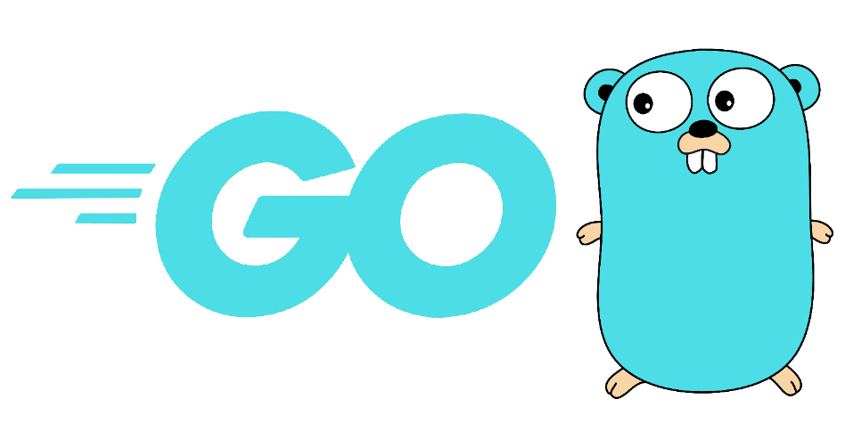
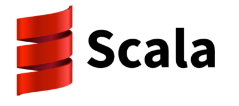
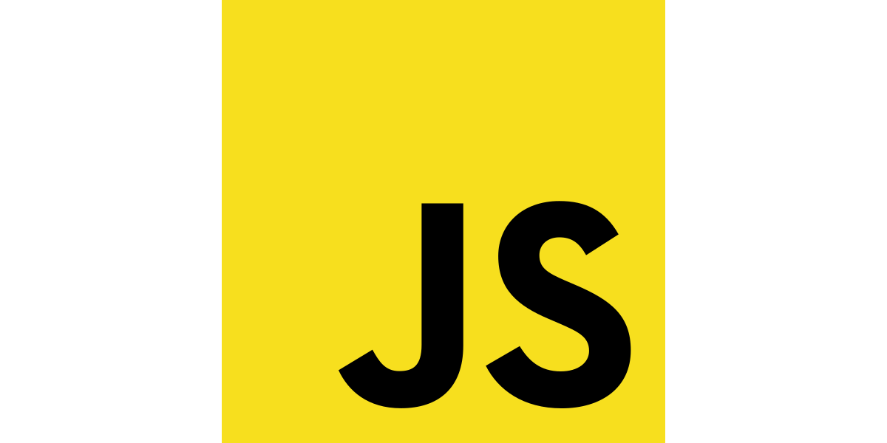
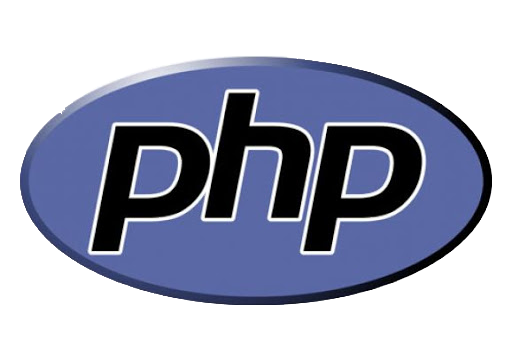

Programing Information
Programing Information

Lenguajes de programación
Un lenguaje de programación es un lenguaje formal que, mediante una serie de instrucciones, le permite a un programador escribir un conjunto de ordenes, acciones consecutivas, datos y algoritmos para, de esa forma crear programas que controlen el comportamiento físico y lógico de una máquina.
 Facebook
Facebook Twitter
Twitter Pinterest
Pinterest Instagram
Instagram Youtube
Youtube Gmail
GmailA lo largo de tiempo los avances tecnológicos han ido mejorando, en el mundo de la programación hay una gran cantidad de lenguajes que en poco tiempo han ganado una gran popularidad, esto debido a lo fácil y prácticos que son. Se ha hecho una gran investigación de los lenguajes de programación con más demanda de este año 2020, sino sabes uno de estos lenguajes no esta de más darle una oportunidad.
Los lenguajes de programación más demandados para este 2020
Go
GO es un lenguaje de programación de código abierto y fácil de aprender, con una sintaxis concisa, limpia y eficiente. Combina cosas de los lenguajes compilados, interpretados, estáticos y dinámicos. Combina el poder de lenguajes de más alto nivel como Python y JavaScript. Es concurrente, permite ejecutar tareas en pedacitos. Además puede compilar para cualquier sistema operativo
Oportunidades laborales
Cloud y Networking
Crear servicios y microservicios directamente en la nube
Scripts del sistema
Programas que corran en línea de comandos
Devops
Automatizaciones para el sistema
Web
Puedes usar GO solo para el backend, crear una API y que el frontend la consuma. Go incluye su servidor web y permite crear template para las vistas
Scala
Scala es un lenguaje de programación Orientado a Objetos con características de programación funcional que corrige sobre la Máquina. Los tipos estáticos de Scala ayudan a evitar errores en aplicaciones complejas, y sus tiempos de ejecución JVM y JavaScript le permiten construir sistemas de alto rendimiento con fácil acceso a enormes ecosistemas de bibliotecas.
Oportunidades laborales
Big data:
Hace uso de la programación funcional de una manera mucho más simple que Java.
Software:
Programas que corran en línea de comandos.
Ruby
Ruby es un lenguaje de programación interpretado, reflexivo y orientado a objetos, cuya filosofía es que hay más de una forma de identificar las cosas, y permite que si lo haces bien, puedes ser conciso y no tengas que repetirte todo el tiempo. Esta diseñado para la productividad y diversión del desarrollador siguiendo el principio de la menor sorpresa lo que significa que miminiza la confusión al usarlo.
Oportunidades laborales
Web:
Puedes usar Ruby para el backend creando sistemas de usuarios, conexiones a bases de datos, perfiles de administración, APIs, etc.
Software:
No necesitas ningún tipo de licencia para trabajar con el software.
Otros:
Ruby es de propósito general, así que puedes usarlo para programar lo que sea.
TypeScript
JavaScript es uno de los lenguajes más populares, ha evolucionado y mejorado a pasos agigantados en los últimos años. Sin embargo, Javascript en algún punto fue un lenguaje que presentaba muchos problemas para bases de código grandes, aplicaciones de gran escala y proyectos con muchos años de desarrollo. 2012 fue el año en que Typescript apareció, una solución de Microsoft para el desarrollo de aplicaciones con Javascript a gran escala, para ellos y para sus clientes, implementando características en el lenguaje que nos permitan desarrollar herramientas más avanzadas para el desarrollo de aplicaciones.
Oportunidades laborales
Web:
Permite crear grandes aplicaciones web sin tener las complicaciones de JavaScript. Se usa bastante en frameworks de JavaScript.
kotlin
Kotlin es un lenguaje de programación pragmático pensado para funcionar con Máquina Virtual de Java (JVM) y Android. Además, puede ser compilado a código fuente de Javascript. Se caracteriza por una perfecta combinación de características orientadas a la funcionalidad durante la programación, centrándose en la seguridad, la claridad y la interoperabilidad. El hecho de que se trate de un lenguaje open source no es la única causa de su rápida expansión. La herramienta de conversión en un clic de Java a Kotlin ha facilitado notablemente su crecimiento en el mercado.
Oportunidades laborales
Desarrollo de aplicaciones móviles:
Puede ser utilizado en cualquier tipo de desarrollo, basado en servidor, web de cliente o Android. Dispone de soporte para otras plataformas como sistemas integrados macOS e iOS.
Data Science
Inteligencia artificial.
Proyectos del lado servidor y del lado cliente
Combinado con JavaScript y JavaFX.
Objective-C

Objective-C es un lenguaje de programación orientado a objetos creado como un superconjunto de C para que implementase un modelo de objetos parecido al de Smalltalk. Actualmente se usa como un lenguaje principal de programación para Mac OS X, iOS y GNUstep, además de Swift.
Oportunidades laborales
Desarrollo en iOS:
Desarrollo de apliaciones para el desarrollo de apple, iPhone y iPad.
JavaScript
JavaScript es un lenguaje de programación que te permite realizar actividades complejas en una página web — cada vez más una página web hace más cosas que sólo mostrar información estática — como mostrar actualizaciones de contenido en el momento, interactuar con mapas, animaciones gráficas 2D/3D etc. — puedes estar seguro que JavaScript está involucrado. Es la tercera capa del pastel de los estándares en las tecnologías para la web.
Oportunidades laborales
Web:
Desarrolla la interactividad de los sitios web, además de consumir APIs, manejar y mostrar la información solicitada al backend.
Swift
Swift es un lenguaje de programación multiparadigma creado por Apple enfocado en el desarrollo de aplicaciones para iOS y macOS. Está diseñado para integrarse con los Frameworks Cocoa y Cocoa Touch; puede usar cualquier biblioteca programada en Objective-C y llamar a funciones de C.
Oportunidades laborales
Desarrollo en iOS:
Desarrollo de apliaciones para el desarrollo de apple, iPhone y iPad. Desarrollar código en Swift compatible con Objective-C.
Php
PHP es un lenguaje de programación de uso general que se adapta especialmente al desarrollo web. El código PHP suele ser procesado en un servidor web por un intérprete PHP implementado como un módulo, un daemon o como un ejecutable de interfaz de entrada común. En un servidor web, el resultado del código PHP interpretado y ejecutado —que puede ser cualquier tipo de datos, como el HTML generado o datos de imágenes binarias— formaría la totalidad o parte de una respuesta HTTP.
Oportunidades laborales
Web:
Puedes hacer una pagina web solo con php, puedes hacer frontend y backend solo con este lenguaje, lo único que debes hacer es subir los archivos de tu sitio a un servidor.
Java

Java es un lenguaje de programación orientado a objetos y de propósito general. La idea de Java es que pueda realizarse programas con la posibilidad de ejecutarse en cualquier contexto, en cualquier ambiente, siendo así su portabilidad uno de sus principales logros. Una vez terminamos nuestro programa en Java, este se compila, se convierte a bytecode de Java. Y este bytecode es leído por el Java Virtual Machine, que es el que se encarga de traducirlo a código máquina.
Oportunidades laborales
Web:
Se usa para el backend, manejando la información de una base de datos. Puedes crear una API que va a pasar y recibir datos del fronted.
Cloud y Networking
Crear servicios y microservicios directamente en la nube.
Desarrollo de aplicaciones moviles
Crear aplicaciones móviles muy efectivas y rápidas, puedes crear una parte de la aplicación con este lenguaje o toda la aplicación.
Desarrollo de videojuegos
Debido a que en Java casi todo es un objeto, la creación de videojuegos es más fácil y practica, además de ofrecer un excelente rendimiento.